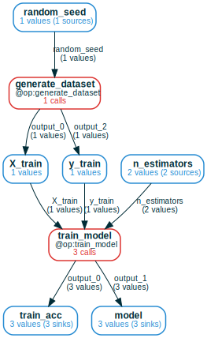
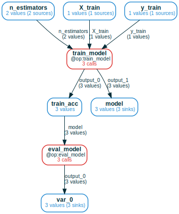
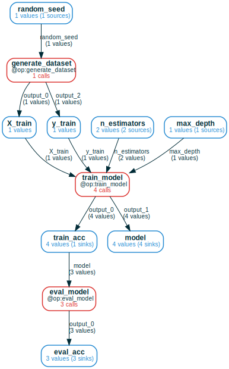

Random forest ML project

This tutorial will show you how mandala works in a small random forest
ML project. You'll see how queriable & composable memoization is a simple way
to achieve the main goals of scientific data management:
-
iterate in the simplest way by just dumping more logic/parameters/experiments on top of the code you already ran. Memoization automatically takes care of loading past results, skipping over past computations, and merging results across compatible versions of your code.
-
explore the interdependencies of all saved results incrementally and declaratively with computation frames, generalized dataframes that operate over memoized computation graphs. Expand the computational history of artifacts backward (to what produced them) and/or forward (to experiments that used them), perform high-level operations over slices of storage, and generate dataframes of results for further analysis.
Imports & setup
# for Google Colab
try:
import google.colab
!pip install git+https://github.com/amakelov/mandala
except:
pass
from typing import Tuple
import numpy as np
import pandas as pd
from sklearn.datasets import load_digits
from sklearn.model_selection import train_test_split
from sklearn.ensemble import RandomForestClassifier
# recommended way to import mandala functionality
from mandala.imports import *
np.random.seed(0)
@op # memoizing decorator
def generate_dataset(random_seed=42):
print(f"Generating dataset...")
X, y = load_digits(return_X_y=True)
X_train, X_test, y_train, y_test = train_test_split(
X, y, test_size=0.2, random_state=random_seed)
return X_train, X_test, y_train, y_test
@op
def train_model(X_train, y_train):
print(f"Training model...")
model = RandomForestClassifier(n_estimators=1)
model.fit(X_train, y_train)
return model, round(model.score(X_train, y_train), 2)
@op
def eval_model(model, X_test, y_test):
print(f"Evaluating model...")
return round(model.score(X_test, y_test), 2)
Running and iterating on the pipeline
Run the pipeline once with default settings
# in-memory storage for all results in this notebook; use `db_path` to persist
# to disk
storage = Storage()
with storage: # block to make all @ops called inside read/write to a given storage
X_train, X_test, y_train, y_test = generate_dataset()
model, train_acc = train_model(X_train, y_train)
test_acc = eval_model(model, X_test, y_test)
print(f"Train accuracy: {train_acc},\nTest accuracy: {test_acc}")
Generating dataset...
Training model...
Evaluating model...
Train accuracy: AtomRef(0.91, hid=8f5...),
Test accuracy: AtomRef(0.76, hid=57f...)
Now all three calls are saved to the storage. @ops return value
references, which wrap a Python object with some storage metadata needed to
make the memoization compose. To get the underlying object, call
storage.unwrap(ref).
Thanks to that metadata, when we re-run memoized code, the storage recognizes step-by-step that all work has already been done, and only loads references to the results (not the Python objects themselves):
with storage: # same code, but now it only loads pointers to saved results
X_train, X_test, y_train, y_test = generate_dataset()
model, train_acc = train_model(X_train, y_train)
test_acc = eval_model(model, X_test, y_test)
print(f"Train accuracy: {train_acc},\nTest accuracy: {test_acc}")
Train accuracy: AtomRef(hid=8f5..., in_memory=False),
Test accuracy: AtomRef(hid=57f..., in_memory=False)
Iterate directly on top of memoized code and change memoized functions backward-compatibly
This also makes it easy to iterate on a project by just adding stuff on top of
already memoized code. For example, let's add a new parameter to train_model
in a way compatible with our current results:
@op
def train_model(X_train, y_train, n_estimators=NewArgDefault(1)):
print(f"Training model...")
model = RandomForestClassifier(n_estimators=n_estimators)
model.fit(X_train, y_train)
return model, round(model.score(X_train, y_train), 2)
with storage:
X_train, X_test, y_train, y_test = generate_dataset()
for n_estimators in [1, 10, 100]:
print(f"Running with {n_estimators} trees...")
model, train_acc = train_model(X_train, y_train, n_estimators=n_estimators)
test_acc = eval_model(model, X_test, y_test)
print(f" Train accuracy={train_acc},\n Test accuracy={test_acc}")
Running with 1 trees...
Train accuracy=AtomRef(hid=8f5..., in_memory=False),
Test accuracy=AtomRef(hid=57f..., in_memory=False)
Running with 10 trees...
Training model...
Evaluating model...
Train accuracy=AtomRef(1.0, hid=760...),
Test accuracy=AtomRef(0.94, hid=600...)
Running with 100 trees...
Training model...
Evaluating model...
Train accuracy=AtomRef(1.0, hid=ab0...),
Test accuracy=AtomRef(0.98, hid=45f...)
When we add a new argument with a default value wrapped as NewArgDefault(obj),
this ensures backward compatibility. mandala will ignore this parameter
when its value equals obj, and fall back to memoized calls that don't
provide this argument.
This is why Training model... got printed only two times, and why the
results for n_estimators=1 are not in memory (in_memory=False).
Pros and cons of memoization
Composable memoization is a powerful imperative query interface: if you have the memoized code in front of you, the code becomes its own storage interface. You can just retrace it and get references to any intermediate results you want to look at. This is very flexible, because you can add control flow logic to restrict the "query". Retracing is cheap, because large objects are not loaded from storage, letting you narrow down your "query" before high-bandwidth interaction with the backend.
However, the full memoized code may not always be in front of you! Especially in larger projects, where it's easy to lose track of what has already been computed, there's a need for a complementary storage interface based on declarative principles. We discuss this next.
Querying the storage with computation frames
In cases when memoization-based querying is not enough, mandala offers the
ComputationFrame class. A computation frame is a generalization of the
familiar pandas dataframe in two main ways:
- the "columns" of a computation frame represent a computational graph, made of variables and operations on them.
- the "rows" of a computation frame are computations that (partially) follow the structure of the computational graph.
It's best to illustrate this with some examples:
ComputationFrame with:
5 variable(s) (10 unique refs)
1 operation(s) (3 unique calls)
Computational graph:
var_0@output_0, var_1@output_1 = train_model(X_train=X_train, n_estimators=n_estimators, y_train=y_train)
We just got a computation frame (CF) corresponding to a very simple computation
graph: it only has one operation, train_model, with its associated inputs and
outputs. Output variables are appended with the name of the function output
they are connected to, in order to remove ambiguity in cases when not all
outputs of an operation are present in the computational graph.
The printout also describes the overall number of Refs and Calls represented
by this CF. Much like in pandas, we can rename the "columns" of our
computation frame for readability:
ComputationFrame with:
5 variable(s) (10 unique refs)
1 operation(s) (3 unique calls)
Computational graph:
train_acc@output_0, model@output_1 = train_model(X_train=X_train, n_estimators=n_estimators, y_train=y_train)
We can directly extract a dataframe from the CF:
| | y_train | X_train | n_estimators | train_model | model | train_acc |
|---:|:------------------|:--------------------------------|---------------:|:------------------------------|--------:|:----------------------------------------|
| 0 | [6 0 0 ... 2 7 1] | [[ 0. 0. 3. ... 13. 4. 0.] | nan | Call(train_model, hid=ac0...) | 0.91 | RandomForestClassifier(n_estimators=1) |
| | | [ 0. 0. 9. ... 3. 0. 0.] | | | | |
| | | [ 0. 0. 0. ... 6. 0. 0.] | | | | |
| | | ... | | | | |
| | | [ 0. 0. 9. ... 16. 2. 0.] | | | | |
| | | [ 0. 0. 1. ... 0. 0. 0.] | | | | |
| | | [ 0. 0. 1. ... 1. 0. 0.]] | | | | |
| 1 | [6 0 0 ... 2 7 1] | [[ 0. 0. 3. ... 13. 4. 0.] | 100 | Call(train_model, hid=255...) | 1 | RandomForestClassifier() |
| | | [ 0. 0. 9. ... 3. 0. 0.] | | | | |
| | | [ 0. 0. 0. ... 6. 0. 0.] | | | | |
| | | ... | | | | |
| | | [ 0. 0. 9. ... 16. 2. 0.] | | | | |
| | | [ 0. 0. 1. ... 0. 0. 0.] | | | | |
| | | [ 0. 0. 1. ... 1. 0. 0.]] | | | | |
| 2 | [6 0 0 ... 2 7 1] | [[ 0. 0. 3. ... 13. 4. 0.] | 10 | Call(train_model, hid=5f7...) | 1 | RandomForestClassifier(n_estimators=10) |
| | | [ 0. 0. 9. ... 3. 0. 0.] | | | | |
| | | [ 0. 0. 0. ... 6. 0. 0.] | | | | |
| | | ... | | | | |
| | | [ 0. 0. 9. ... 16. 2. 0.] | | | | |
| | | [ 0. 0. 1. ... 0. 0. 0.] | | | | |
| | | [ 0. 0. 1. ... 1. 0. 0.]] | | | | |
/home/amakelov/workspace/current/conda_envs/mandala_3.10/lib/python3.10/site-packages/tabulate/__init__.py:107: FutureWarning: elementwise comparison failed; returning scalar instead, but in the future will perform elementwise comparison
(len(row) >= 1 and row[0] == SEPARATING_LINE)
/home/amakelov/workspace/current/conda_envs/mandala_3.10/lib/python3.10/site-packages/tabulate/__init__.py:108: FutureWarning: elementwise comparison failed; returning scalar instead, but in the future will perform elementwise comparison
or (len(row) >= 2 and row[1] == SEPARATING_LINE)
We get back a table, where each row corresponds to a call to train_model.
Furthermore, the Call objects themselves (which contain metadata about the
call) appear in the column dedicated to the single operation in the graph.
We see that in the n_estimators column we have the values [NaN, 10.0, 100.0]
(in some order), reflecting the fact that we made 1 call to train_model before
introducing the n_estimators argument, and 2 afterwards.
Exploring storage by expanding the CF
This CF gets much more interesting and useful when we can look into where the
inputs to train_model came from, and what the outputs were used for. We can
add the history of particular variables by calling expand_back on the CF, and
similarly expand_forward shows the operations that consume given variables:
print('Expanding back the inputs:')
cf.expand_back(varnames=["X_train", "y_train"]).draw(verbose=True)
print('\nExpanding forward the outputs:')
cf.expand_forward(varnames=['model', 'train_acc']).draw(verbose=True)
Expanding back the inputs:

Expanding forward the outputs:

We can perform a full expansion (until we can't go back or forward) with the
.expand() method:
ComputationFrame with:
7 variable(s) (14 unique refs)
3 operation(s) (7 unique calls)
Computational graph:
X_train@output_0, y_train@output_2 = generate_dataset(random_seed=random_seed)
train_acc@output_0, model@output_1 = train_model(X_train=X_train, n_estimators=n_estimators, y_train=y_train)
var_0@output_0 = eval_model(model=train_acc)
Note that the extracted CF represents a "partial" computation graph: the
variables for X_testand y_test were not reached during this traversal
(though they can be added). Finally, we can (again) extract a dataframe from
this CF:
df = expanded_cf.df().drop(columns=['X_train', 'y_train']) # drop to avoid a bit of clutter
print(df.to_markdown())
| | random_seed | generate_dataset | n_estimators | train_model | model | train_acc | eval_model | var_0 |
|---:|--------------:|:-----------------------------------|---------------:|:------------------------------|--------:|:----------------------------------------|:-----------------------------|--------:|
| 0 | 42 | Call(generate_dataset, hid=c3f...) | nan | Call(train_model, hid=ac0...) | 0.91 | RandomForestClassifier(n_estimators=1) | Call(eval_model, hid=c5a...) | 0.76 |
| 1 | 42 | Call(generate_dataset, hid=c3f...) | 100 | Call(train_model, hid=255...) | 1 | RandomForestClassifier() | Call(eval_model, hid=07b...) | 0.98 |
| 2 | 42 | Call(generate_dataset, hid=c3f...) | 10 | Call(train_model, hid=5f7...) | 1 | RandomForestClassifier(n_estimators=10) | Call(eval_model, hid=ed5...) | 0.94 |
Using computation frames for high-level operations
Finally, we can illustrate the use of computation frames for easy declarative operations over the storage, even in the presence of highly heterogeneous experiments. To make this more interesting, let's train some more models:
@op
def train_model(X_train, y_train,
n_estimators=NewArgDefault(1),
max_depth=NewArgDefault(None) # one more backward-compatible argument
):
print(f"Training model...")
model = RandomForestClassifier(n_estimators=n_estimators, max_depth=max_depth)
model.fit(X_train, y_train)
return model, round(model.score(X_train, y_train), 2)
with storage:
X_train, X_test, y_train, y_test = generate_dataset()
for n_estimators in [10, 100]:
for max_depth in [1, 2]:
model, train_acc = train_model(X_train, y_train, n_estimators=n_estimators, max_depth=max_depth)
Training model...
Training model...
Training model...
Training model...
We left out the call to eval_model on purpose to illustrate how CFs handle
heterogeneous and partial computations.
As before, we build a big CF by expanding backward and forward from
train_model, and then extract a dataframe:
cf = storage.cf(train_model).expand_all().rename(vars={'var_0': 'model', 'var_1': 'train_acc', 'var_2': 'eval_acc'})
# use `lazy_vars` to avoid loading the large arrays which we don't need
df = cf.df(lazy_vars=['X_train', 'y_train'], join_how='outer').drop(columns=['X_train', 'y_train'])
print(df.to_markdown())
| | max_depth | n_estimators | random_seed | generate_dataset | train_model | train_acc | model | eval_model | eval_acc |
|---:|------------:|---------------:|--------------:|:-----------------------------------|:------------------------------|------------:|:-----------------------------------------------------|:-----------------------------|-----------:|
| 0 | nan | nan | 42 | Call(generate_dataset, hid=c3f...) | Call(train_model, hid=ac0...) | 0.91 | RandomForestClassifier(n_estimators=1) | Call(eval_model, hid=c5a...) | 0.76 |
| 1 | nan | 100 | 42 | Call(generate_dataset, hid=c3f...) | Call(train_model, hid=255...) | 1 | RandomForestClassifier() | Call(eval_model, hid=07b...) | 0.98 |
| 2 | 2 | 10 | 42 | Call(generate_dataset, hid=c3f...) | Call(train_model, hid=e61...) | 0.71 | RandomForestClassifier(max_depth=2, n_estimators=10) | | nan |
| 3 | 1 | 10 | 42 | Call(generate_dataset, hid=c3f...) | Call(train_model, hid=f56...) | 0.59 | RandomForestClassifier(max_depth=1, n_estimators=10) | | nan |
| 4 | 2 | 100 | 42 | Call(generate_dataset, hid=c3f...) | Call(train_model, hid=fe1...) | 0.84 | RandomForestClassifier(max_depth=2) | | nan |
| 5 | nan | 10 | 42 | Call(generate_dataset, hid=c3f...) | Call(train_model, hid=5f7...) | 1 | RandomForestClassifier(n_estimators=10) | Call(eval_model, hid=ed5...) | 0.94 |
| 6 | 1 | 100 | 42 | Call(generate_dataset, hid=c3f...) | Call(train_model, hid=561...) | 0.7 | RandomForestClassifier(max_depth=1) | | nan |
We see that the various missing computational paths show up as NaNs in the
table, under either variables (e.g. max_depth) or operations (e.g.
eval_model).
Suppose we want the models where train accuracy was above 0.8 and max depth was 2. We can do this with familiar dataframe operations:
[RandomForestClassifier(max_depth=2)]
Similarly, we can manipulate storage by e.g. deleting calls based on this
dataframe. For example, we can delete all calls to train_model where
train_acc < 0.8:
storage.drop_calls(df.query('train_acc < 0.8').train_model, delete_dependents=True)
# now check that the dropped calls are gone
cf = storage.cf(train_model).expand_all().rename(vars={'var_1': 'model', 'var_0': 'train_acc', 'var_2': 'eval_acc'})
df = cf.df(lazy_vars=['X_train', 'y_train']).drop(columns=['X_train', 'y_train'])
print(df.to_markdown())
[17:32:39] INFO Dropped 3 calls (and 3 from cache). storage.py:350
| | max_depth | n_estimators | random_seed | generate_dataset | train_model | model | train_acc | eval_model | eval_acc |
|---:|------------:|---------------:|--------------:|:-----------------------------------|:------------------------------|--------:|:----------------------------------------|:-----------------------------|-----------:|
| 0 | nan | nan | 42 | Call(generate_dataset, hid=c3f...) | Call(train_model, hid=ac0...) | 0.91 | RandomForestClassifier(n_estimators=1) | Call(eval_model, hid=c5a...) | 0.76 |
| 1 | nan | 100 | 42 | Call(generate_dataset, hid=c3f...) | Call(train_model, hid=255...) | 1 | RandomForestClassifier() | Call(eval_model, hid=07b...) | 0.98 |
| 2 | 2 | 100 | 42 | Call(generate_dataset, hid=c3f...) | Call(train_model, hid=fe1...) | 0.84 | RandomForestClassifier(max_depth=2) | | nan |
| 3 | nan | 10 | 42 | Call(generate_dataset, hid=c3f...) | Call(train_model, hid=5f7...) | 1 | RandomForestClassifier(n_estimators=10) | Call(eval_model, hid=ed5...) | 0.94 |
